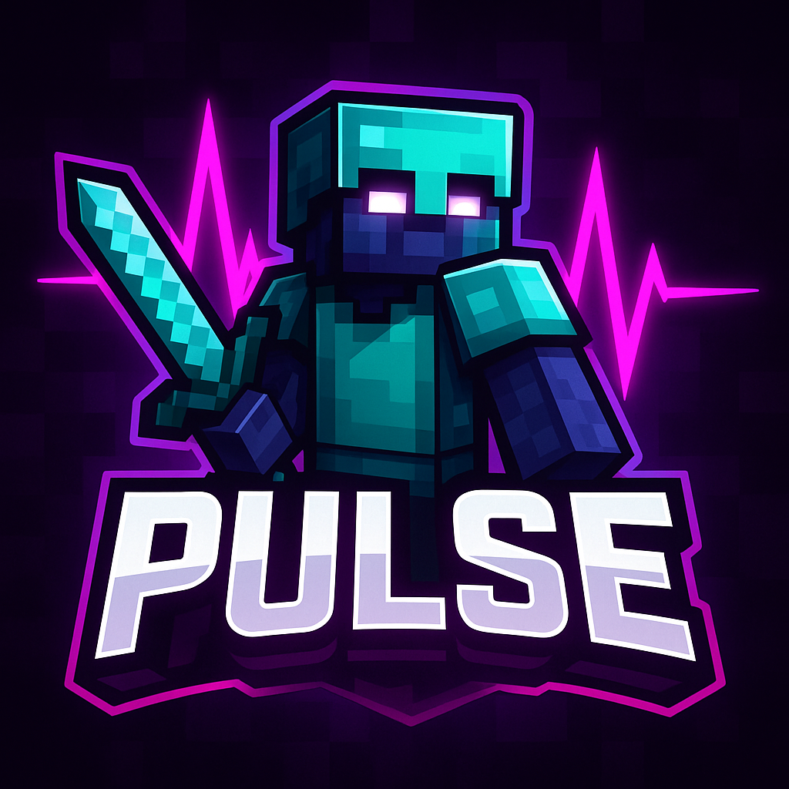

{/* Changé de 'en' à 'fr' pour correspondre à l'index */}
Pulse Network - Staff

Pulse Network
{/* Renommé pour éviter conflit si l'autre script est chargé */}
{/* ID changé pour éviter conflit */}
Home
Staff
Meet Our Staff
Owner
Refroidissement
Newhall
MEDIA-OWNER
qBedwars
Manager
Dewier
Developer
swcm
{/* Conteneur pour centrer le lien */}
Back to Home